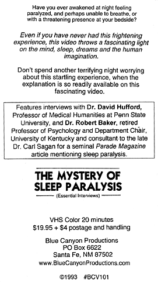
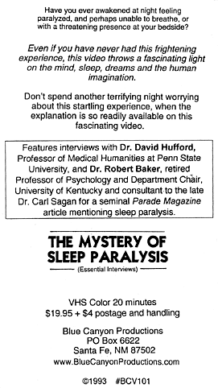

|
(www.BlueCanyonProductions.com)
"Santa Fe's —and therefore the world's—strangest web site. Fascinating sound clips and soul-nourishing content." - Bill Hutchison, staff writer, Santa Fe Reporter (See our Home Page) |
"The Mystery of Sleep Paralysis"
In this 20-minute video, three experts explain this natural phenomenon which is nonetheless very frightening and mysterious to people in modern Western culture, unlike in other cultures where it is better understood. $19.95.
| A recent NBC-TV "Dateline" story (8-16-00) has rekindled interest in this ancient but mysterious phenomenon, Sleep Paralysis. Our 1993 videotape includes interviews with some of the same experts interviewed by "Dateline," and more! Still available, still the most concentrated source of information on this fascinating subject. |
 

"The price is right and the topic is one that deserves to be better known" -Library
Journal
Not a slickly produced video, but simple, informative and fascinating.